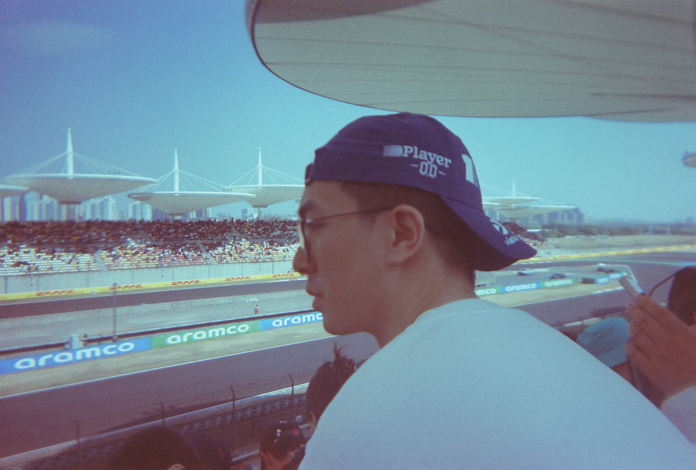

R
ay
C
han
About
Contact
Photos
Notes
Essays

Ray
Chan
Explore
↓
About Me
Cherish · Remain 温柔永存 · 岁岁相伴
Project Manager
Currently focused on
量化策略 · 全栈工程
2022 – 2025
TCL
2025 – 2026
CMB
2026 – Now
Manycore Tech
Get In Touch
⟶
Email
chenrui0411@outlook.com
点击复制
⟶
WeChat / Phone
19874061160
点击复制
⟶
Location
广州
点击复制
GitHub ↗
LinkedIn ↗
X ↗
Jike ↗